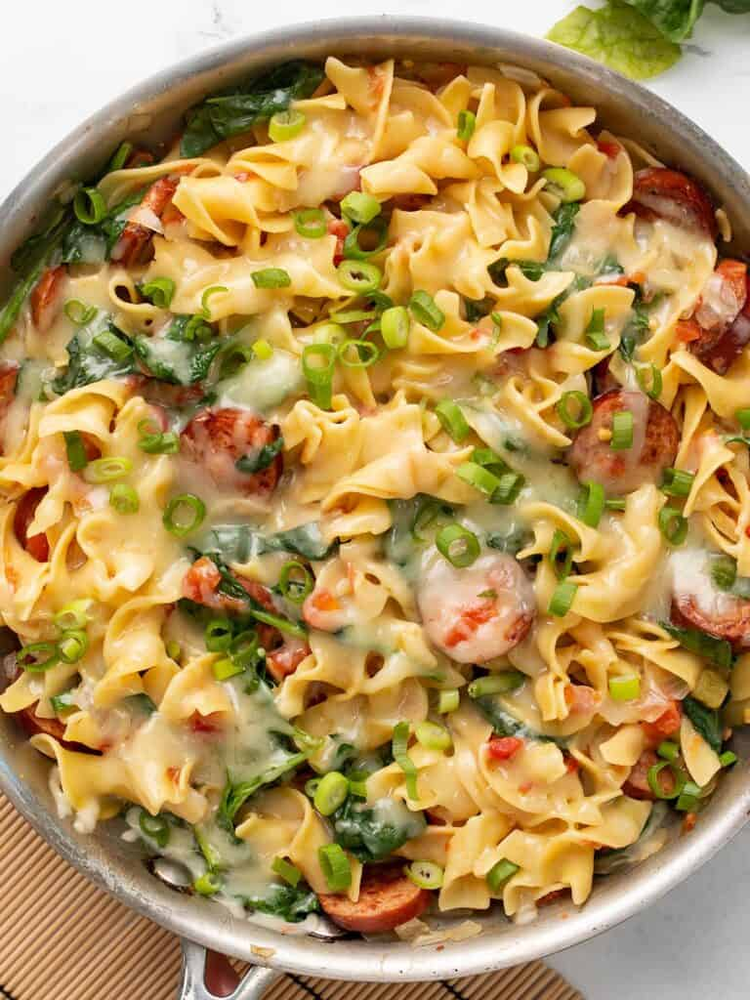

Cheesy Sausage Pasta
Home Page

Pasta with sausage, tomatoes, spinach and onions all cooked in one pot!
Makes 4 servings and takes about 30 minutes to cook!
Ingredients:
- 1 yellow onion
- 7 oz. smoked sausage
- 1 Tbsp cooking oil
- 1 10 oz. can diced tomatoes with green chiles
- 8 oz. wide egg noodles
- 1.5 cups chicken broth
- 3 cups fresh spinach
- 1 cup shredded Monterey Jack
- 1 green onion, sliced
Steps:
- Dice the onion and slice the sausage into rounds.
- Add the cooking oil and sausage to a large skillet and cook over medium heat until the sausage is well browned. If there is excess fat in the skillet, drain it off before moving to the next step.
- Add the onions to the skillet with the sausage and continue to sauté until the onions have softened. Allow the mousture from the onions to dissolve any browned bits off the bottom of the skillet.
- Add the diced tomatoes with green chiles (with juices), uncooked pasta and chicken broth. Stir until everything is evenly combined. It's okay if the broth does not fully cover the pasta.
- Place a lid on the skillet and allow the broth to come up to a boil. When it reaches a boil turn the heat down to a medium-low and let the pasta simmer for about 10 minutes, or until tender. Stir the pasta occasionally, replaceing the lid each time.
- Once the pasta is cooked and only a small amount of saucy liquid remains, it's time to add the spinach to the skillet. Gently stir the fresh spinach into the pasta, allowing the residual heat to wilt the spinach.
- Once the spinach has wilted, top the pasta with Monterey Jack chees. Place the lid back on the skillet and let the pasta heat over low until the cheese is melted and creamy.
- Sprinkle the sliced green onions over top just before serving.